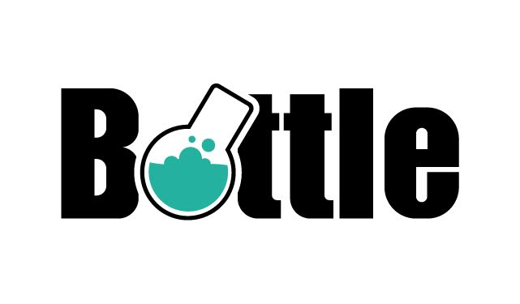
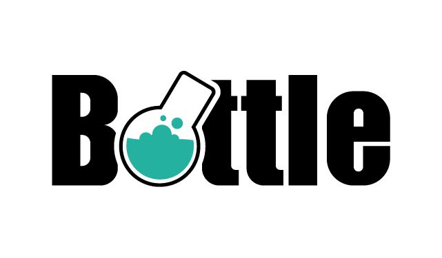

Introducing:
aiohttp_admin
Nikolay Novik
KyivPy 18
I am ...
- Software Engineer: at DataRobot Ukraine
- Github: https://github.com/jettify
- Twitter: https://twitter.com/isinf
- My Projects:
- database clients:
aiomysql, aioobc, aiogibson - web and etc:
aiohttp_debugtoolbar, aiobotocore, aiohttp_mako, aiohttp_admin
- database clients:
What web framework do you use?


 

Motivation. Why we might want to have "automatic" admin interface?
- For small web applications or micro services, where custom admin interface is overkill.
- To give a manager something to play with while proper admin interface is not ready.
- Could be solution if you absolutly hate to write a lot of
js/htmlbut have to
Existing admin libraries
-
Pyramid
- https://github.com/Javex/pyramid_crud
- https://github.com/appetito/pyramid_admin
- https://github.com/tarzanjw/pyramid_admin2 Flask
- https://github.com/flask-admin/flask-admin/
- https://github.com/jeanphix/Flask-Dashed
- https://github.com/syrusakbary/flask-superadmin/ Bottle
- https://github.com/avelino/bottle-admin Django
- https://github.com/django/django
Review Django Admin
- Battle tested
- Large number of extensions that sometimes work
- Relies on Forms
- Auth out of the box
- Tightly coupled with Django
- Supports only RDBMS through Django ORM
Review Flask-Admin
- DB and ORM agnostic (supports SQLA, Peewee, MongoEngine, pymongo etc.)
- Somewhat easy to extend, there is nice interface for that
- Large community, admin used in several other opens source projects
- Relies to much on WTForms, forces you sometimes to mix js with python
- Only basic auth out of the box